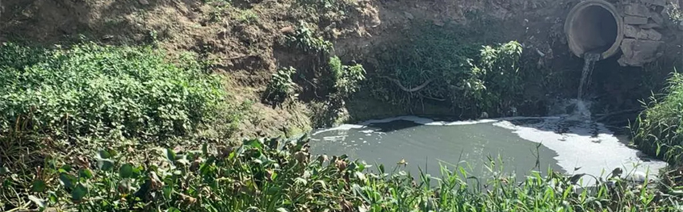

"Ipojuca " é um termo originário da língua tupi antiga: significa "água das raízes podres".
Um gigante, com 323 km de comprimento e passa por 25 municípios, o rio Ipojuca começa e acaba no Estado de Pernambuco.
Já deu nome a cidades, além de tornar-se ponto de referência e localização.
13 cidades formaram-se ao redor do rio durante a colonização portuguesa, fazendo com que o velho Ipojuca moldasse a zona urbana.Outros 12 municípios recebem a água na zona rural. Essas cidades desenvolveram-se através da riqueza oferecida naturalmente pelaafluente.
No entanto, tanta grandeza não consegue ficar imune à ação do homem. Poluição, resquícios de inseticidas e despejos de esgotoafogam a flora do rio, que pede socorro.

Nesse percurso, o Ipojuca banha várias cidades dentre as quais se destacam Pesqueira, Sanharó, Belo Jardim, Tacaimbó, São Caetano, Caruaru, Bezerros e Gravatá (no Agreste), Chã Grande, Primavera, Escada e Ipojuca (na Zona da Mata), recebendo das mesmas um volume elevado de poluentes ao qual se acresce a carga poluidora da atividade agroindustrial.
Diversas são as queixas de quem mora nas proximidades do fluxo de água: mau cheiro, insetos e abandono do poder público. No entanto, nem sempre foi assim.
Na zona rural de Pesqueira, local no qual o rio corta 14 km, a água já foi utilizada para abastecer a população. Na baixa durante o período de seca, o rio não atinge mais os consumidores. No entanto, para o povo da Tribo Xukuru, o Ipojuca ganha ares de importância. Para eles, o rio é sagrado.
De acordo com Gildo Xukuru, representante religioso da tribo, as águas devem ser preservadas. "O rio para a gente é muito forte. Dá sustentação ao nosso povo e as cidades vizinhas. Então, ele tem uma importância muito grande para a gente e é algo muito sagrado, tem que preservar, tem que ter muito cuidado", explica.
Deslocando-se para a zona urbana, na cidade de Sanharó, começam os primeiros sinais de poluição. Lá, o rio Ipojuca recebe o esgoto de quase 4 mil imóveis.
Em 2013, o governo do estado assinou um contrato de empréstimo com o Banco Interamericano de Desenvolvimento (BID) de US $330 milhões para revitalização e esgotamento sanitário nas cidades banhadas pelo rio. A Companhia Pernambucana de Saneamento (Compesa) utilizará 90% dos recursos para a contratação de projetos, obras de coleta, tratamento de esgoto e outros serviços. Os outros 10% ficaram por conta da Agência de Pernambucana de Águas e Climas (Apac), para ações voltadas à preservação e proteção ambiental e recuperação de matas ciliares ao longo do rio Ipojuca.
EXEMPLOS A SEGUIR:
RIO TÂMISA, INGLATERRA